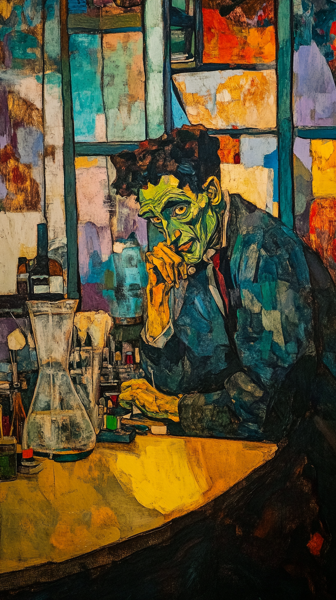
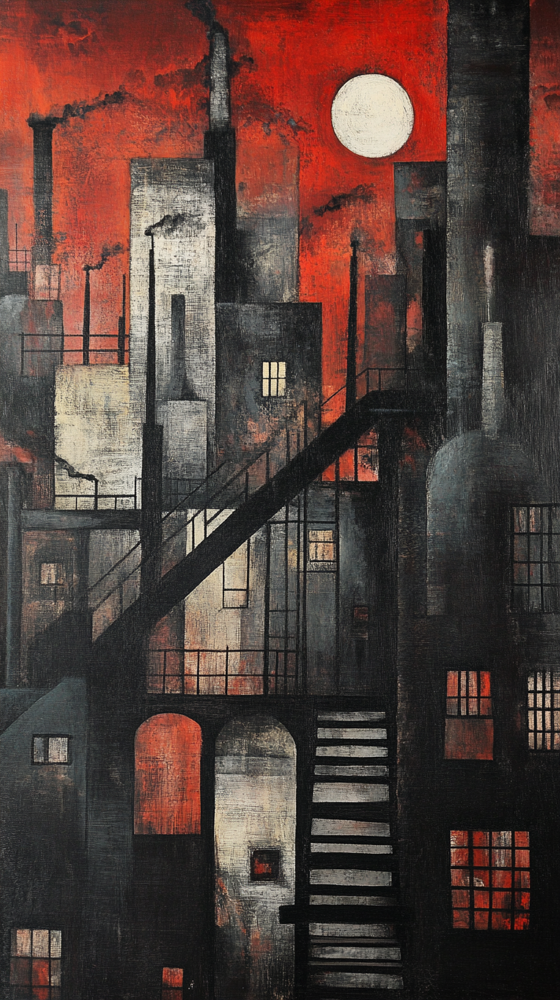

| Knowing through Collaboration |

History of knowledge production| Knowledge is Heroic,
Promethean Solipsistic Marked by idea of Genius (divine spirit) Many stereotypes: Descartes, Goethe, Darwin, Pasteur, Nietzsche Knowledge is the product of Romantic (and Tragic) Vision Culminates in late 19th / early 20th century: Nietzsche, Dostoyevsky, Ramanujan, Einstein, Gödel, Turing, Benjamin Midjourney, “Dr Frankenstein in his laboratory, style of Matisse –ar 9:16” |

knowledge industrializes…. Knowledge becomes institutional: Universities, Colleges, Departments, Institutes, Schools Systematic Literature Review (1970s…) – note the keyword “system” Emphasis on Reproducible Knowledge (in all disciplines) Re-thinking “knowledge” itself as structural (influence of “hermeneutics of suspicion”: Marx, Nietzsche, Freud) World of grants, peer review, computerized analysis, education at SCALE Knowledge is manufactured, and is a product for industry Primacy of the Journal Article| Midjourney, “industrial knowledge production, style of Lowry
–ar 9:16” |
| “Literary competence is no longer based on specialized training in
academic schools, but on technical and commercial training in trade
schools and thus becomes common property.” “in politics it is not individual thoughts, but, as Brecht once expressed it, the art of thinking what is in the heads of other people, that is decisive” “the place of the intellectual in the class struggle can only be determined, or better, chosen, on the basis of his position in the process of production” “The determinant factor is the exemplary character of a production that enables it, first, to lead other producers to this production, and secondly to present them with an improved apparatus for their use. And this apparatus is better to the degree that it leads consumers to production, in short that it is capable of making co-workers out of readers or spectators. We already possess such a model, about which I can only speak briefly here. That is Brecht’s epic theatre.” |
Common Elements Focus on Technique: writing (and knowledge) become regarded as similar to a craft, occupation, trade, industry Knowledge as being “common property” A social process (“heads of other people”) Knowledge involves means of production: materiality, technology (this aspect of Benjamin remains current nearly a century later) “Co-workers”: knowledge as proces of co-production, collaboration |
| Time-sharing on Mainframes DARPA – the Internet (late 60s) Email, fax – Collaboration Local / Wide Area Networks (LAN / WAN) World Wide Web (WWW) Open Source Software (OSS) UNIX / Linux - Network-enabled |
File sharing (FTP) Word Processing / Track Changes Google Docs (real time collaborative editing) Videoconferencing Infrastructure: Undersea Cables – 5G / 6G – Fibre optic – Satellites – Microwave Blockchains AI |
| 1980s/90s Bulletin Boards Newsgroups Forums 2000s Myspace / Facebook Smartphones |
2010s Apps (Snapchat / WhatsApp) Social gestures (Like / Subscribe) Gamification (leaderboard etc) YouTube comments-as-communities 2020s AI |
| Citation (a social practice) Conferences Peer Review Co-authoring Recognition Publicity / Marketing Repository 2000s EndNote / Mendeley Conferences Forms for Review Microsoft Word University website University newsletter University servers |
2020s Zotero Zoom Conferences Platforms for Review Google Docs Google Scholar / ORCID LinkedIn / X / Meta / Reddit Arxiv / SocArxiv / EdArxiv |
| et al. = et alia (“and others”) More and more knowledge is made by X “and others” Who are these “others”? What do they do? How is knowledge diversified? Common Activities or Roles: Literature Review Data Collection IRB Research Project Management Academic Writing Overall Article Framing (Intro & Conclusion) Professorial Prestige? … |
| Author Order Who is In? Who is Out? Do all co-named contribute equally? For multiple publications: Rotational Order? “Obligatory” Co-authorship for Professors? Promote Junior Colleagues? Differences in tone / style / position Often co-authored articles take longer to write – no shortcut |
| AI: Not (yet) properly collaborative Conversations are one-to-one (human-to-AI), not many-to-one (humans-to-AI) Chat conversations can be shared (but not extended) But it is coming… And what do we do about co-authorship with bots? https://discord.com/channels/1288548492691898430/1346607963338702989 |
| Post-industrial knowledge: artisanal, hipster… “Agile” – keyword from software culture Derives from 1980s Toyota / Japanese approach to industrial production Managing chaos, changing requirements – suitable for academia? Networked instead of hierarchical – peer-review (and now AI review) Melds with contemporary language of “participation”, “diversity”, “inclusion” Think of Cybersyn (1971-73) |